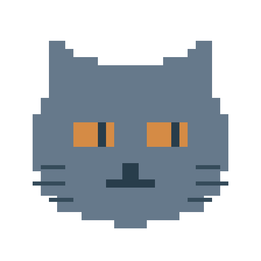

Chartreux
An opinionated Mistral Vibe fork.
A terminal coding harness with a Textual TUI, configurable models, and sub-agent orchestration.
Python 3.12+ · Linux · Apache-2.0
Quickstart
uv tool install git+https://github.com/chartreuxai/chartreux.git chartreux
Requires Python 3.12+ and uv. To develop from a checkout, clone the source repository, then run uv tool install --editable . from its root. If your provider needs credentials, either export MISTRAL_API_KEY="your_mistral_api_key" or run chartreux --setup to save the provider key locally.